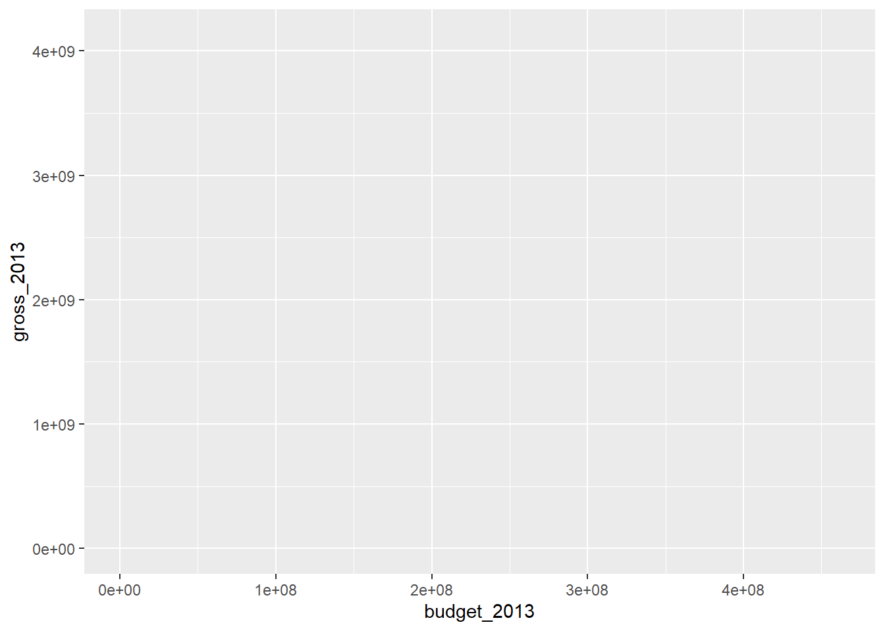
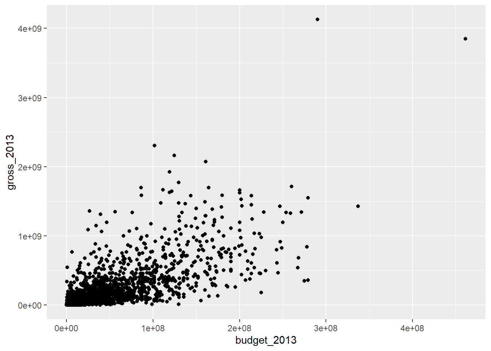
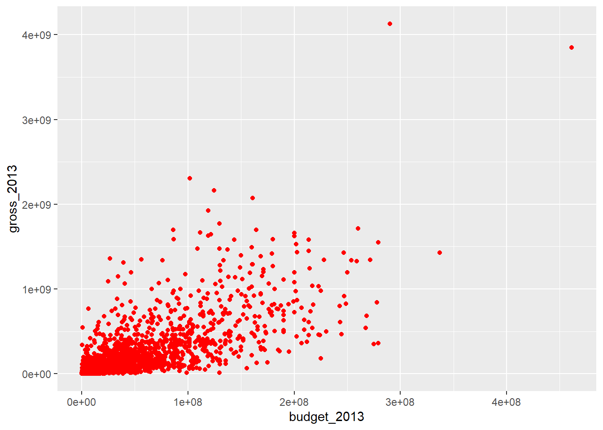
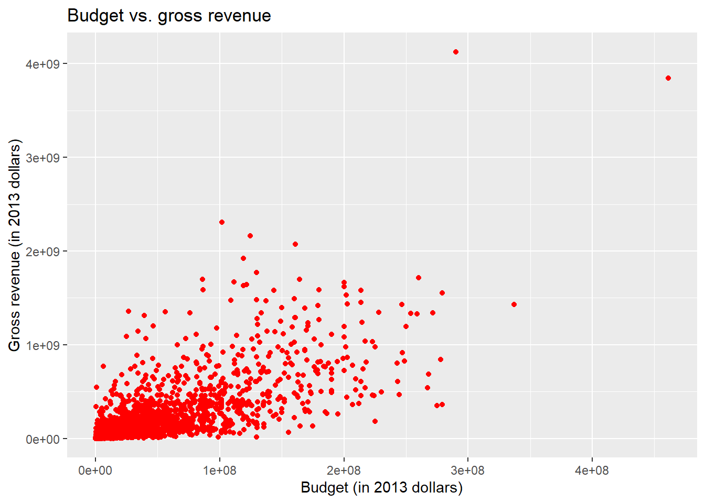
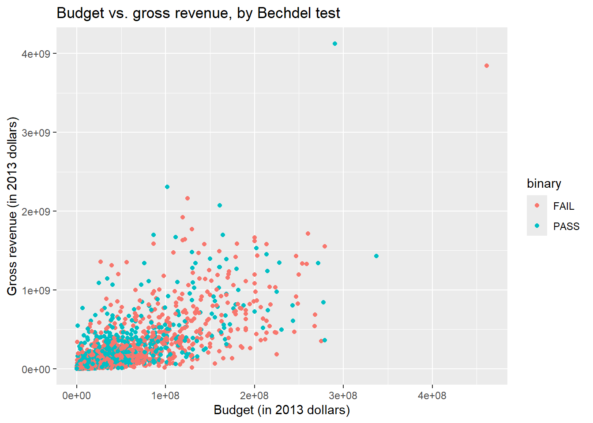
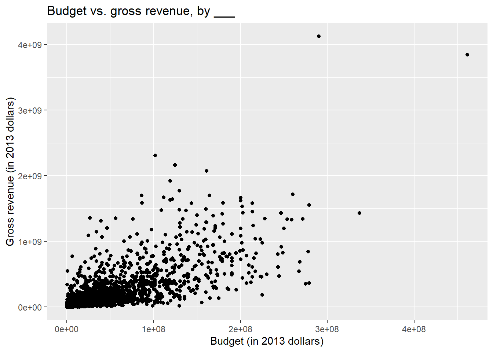

library(tidyverse)
library(scales)AE 00: Bechdel + data visualization
Important
Go to ae-00-bechdel and clone the repo in RStudio to get started.
This AE is ungraded.
Warning
ae-00-bechdel is hosted on GitHub.com because we have not configured your authentication method for Cornell’s GitHub. We will do this tomorrow in lab.
In this mini analysis we work with the data used in the FiveThirtyEight story titled “The Dollar-And-Cents Case Against Hollywood’s Exclusion of Women”.
This analysis is about the Bechdel test, a measure of the representation of women in fiction.
Getting started
Packages
We start with loading the packages we’ll use: tidyverse for majority of the analysis and scales for pretty plot labels later on.
Data
The data are stored as a CSV (comma separated values) file in the data folder of your repository. Let’s read it from there and save it as an object called bechdel.
bechdel <- read_csv("data/bechdel.csv")Get to know the data
We can use the glimpse function to get an overview (or “glimpse”) of the data.
# add code here- What does each observation (row) in the data set represent?
Each observation represents a ___.
- How many observations (rows) are in the data set?
There are 1615 movies in the dataset.
- How many variables (columns) are in the data set?
There are ___ columns in the dataset.
Variables of interest
The variables we’ll focus on are the following:
budget_2013: Budget in 2013 inflation adjusted dollars.gross_2013: Gross (US and international combined) in 2013 inflation adjusted dollars.roi: Return on investment, calculated as the ratio of the gross to budget.clean_test: Bechdel test result:ok= passes testdubiousmen= women only talk about mennotalk= women don’t talk to each othernowomen= fewer than two women
binary: Bechdel Test PASS vs FAIL binary
We will also use the year of release in data prep and title of movie to take a deeper look at some outliers.
There are a few other variables in the dataset, but we won’t be using them in this analysis.
Visualizing data with ggplot2
ggplot2 is the package and ggplot() is the function in this package that is used to create a plot.
ggplot()creates the initial base coordinate system, and we will add layers to that base. We first specify the data set we will use withdata = bechdel.
ggplot(data = bechdel)
- The
mappingargument is paired with an aesthetic (aes()), which tells us how the variables in our data set should be mapped to the visual properties of the graph.
ggplot(
data = bechdel,
mapping = aes(x = budget_2013, y = gross_2013)
)
As we previously mentioned, we often omit the names of the first two arguments in R functions. So you’ll often see this written as:
ggplot(
bechdel,
aes(x = budget_2013, y = gross_2013)
)
Note that the result is exactly the same.
- The
geom_xxfunction specifies the type of plot we want to use to represent the data. In the code below, we usegeom_pointwhich creates a plot where each observation is represented by a point.
ggplot(
bechdel,
aes(x = budget_2013, y = gross_2013)
) +
geom_point()Warning: Removed 15 rows containing missing values or values outside the scale range
(`geom_point()`).
Note that this results in a warning as well. What does the warning mean?
Budget vs. gross revenue
Step 1 - Your turn
Modify the following plot to change the color of all points to a different color.
Tip
See http://www.stat.columbia.edu/~tzheng/files/Rcolor.pdf for many color options you can use by name in R or use the hex code for a color of your choice.
ggplot(
bechdel,
aes(x = budget_2013, y = gross_2013)
) +
geom_point(color = "deepskyblue3")Warning: Removed 15 rows containing missing values or values outside the scale range
(`geom_point()`).
Step 2 - Your turn
Add labels for the title and x and y axes.
ggplot(
bechdel,
aes(x = budget_2013, y = gross_2013)
) +
geom_point(color = "deepskyblue3") +
labs(
x = "___",
y = "___",
title = "___"
)Warning: Removed 15 rows containing missing values or values outside the scale range
(`geom_point()`).
Step 3 - Your turn
An aesthetic is a visual property of one of the objects in your plot. Commonly used aesthetic options are:
- color
- fill
- shape
- size
- alpha (transparency)
Modify the plot below, so the color of the points is based on the variable binary.
ggplot(
bechdel,
aes(x = budget_2013, y = gross_2013)
) +
geom_point() +
labs(
x = "Budget (in 2013 dollars)",
y = "Gross revenue (in 2013 dollars)",
title = "Budget vs. gross revenue, by ___"
)Warning: Removed 15 rows containing missing values or values outside the scale range
(`geom_point()`).
Step 4 - Your turn
Expand on your plot from the previous step to make the size of your points based on roi.
# add code hereStep 5 - Your turn
Expand on your plot from the previous step to make the transparency (alpha) of the points 0.5.
# add code here
ggplot(
bechdel,
aes(x = budget_2013, y = gross_2013)
) +
geom_point() +
labs(
x = "Budget (in 2013 dollars)",
y = "Gross revenue (in 2013 dollars)",
title = "Budget vs. gross revenue, by ___"
)Warning: Removed 15 rows containing missing values or values outside the scale range
(`geom_point()`).
Step 6 - Your turn
Expand on your plot from the previous step by using facet_wrap to display the association between budget and gross for different values of clean_test.
# add code hereStep 7 - Demo
Improve your plot from the previous step by making the x and y scales more legible.
Tip
Make use of the scales package, specifically the scale_x_continuous() and scale_y_continuous() functions.
# add code hereStep 8 - Your turn
Expand on your plot from the previous step by using facet_grid to display the association between budget and gross for different combinations of clean_test and binary. Comment on whether this was a useful update.
# add code hereAdd comment here…
Step 9 - Demo
What other improvements could we make to this plot?
# add code hereReturn-on-investment
Finally, let’s take a look at return-on-investment (ROI).
Step 1 - Your turn
Create side-by-side box plots of roi by clean_test where the boxes are colored by binary.
# add code hereWhat are those movies with very high returns on investment?
bechdel |>
filter(roi > 400) |>
select(title, roi, budget_2013, gross_2013, year, clean_test)# A tibble: 3 × 6
title roi budget_2013 gross_2013 year clean_test
<chr> <dbl> <dbl> <dbl> <dbl> <chr>
1 Paranormal Activity 671. 505595 339424558 2007 dubious
2 The Blair Witch Project 648. 839077 543776715 1999 ok
3 El Mariachi 583. 11622 6778946 1992 nowomen Step 2 - Demo
Expand on your plot from the previous step to zoom in on movies with roi < ___ to get a better view of how the medians across the categories compare.
# add code hereWhat does this plot say about return-on-investment on movies that pass the Bechdel test?